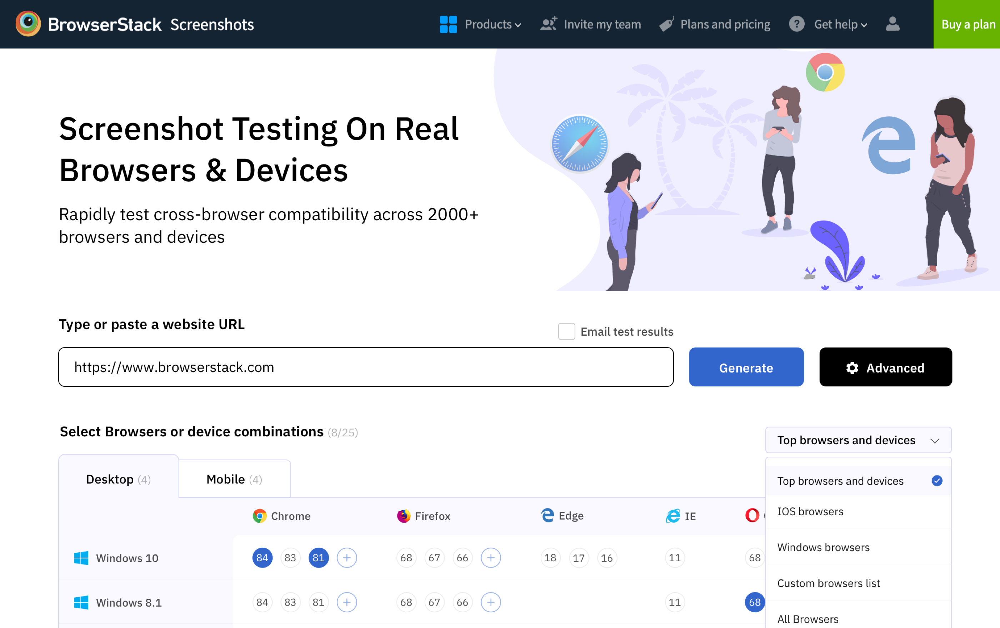
Highlighting the length and breadth of the OS and browser versions offered by BrowserStack.
Finding specific browser and OS combinations isn’t intuitive.
Interaction for selecting multiple combinations to generate multiple screenshots at once may be time-consuming.
Started by conducting quick research on Browserstack Screenshots. Finding it's advantages and limitations. The Goal was to find a pattern of highlighting the length and breadth of the OS and browser versions offered by BrowserStack.
Screenshots default view is a scenario where a user lands on screenshots for the first time.
Input and buttons are unfocued until user starts to type/paste a URL
Below are both the inactive and the active scenarios for the input container
Browsers and OS combinations container will have a fixed height and the content inside it will be scrollable. Users can easily switch between desktop and mobile browsers with the help of tabs.
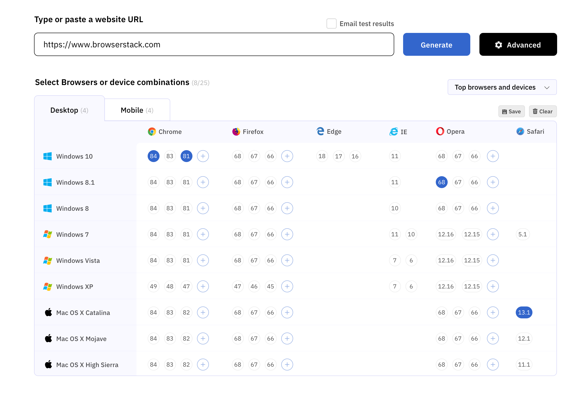
With screenshots users can Save a list, clear a list, filter a list and filter custom combination for the faster access.
Users can add more browser version in the list by clicking on the '+' icon nexxt to the versions. This plus icons will appear on hover event on a perticular combination.
Advanced SettingUsers can swich to advanced settings by clicking on the advanced button nest to generate.
The advanced settings allows users to apply advanced settings such as resolutions,quality,etc.
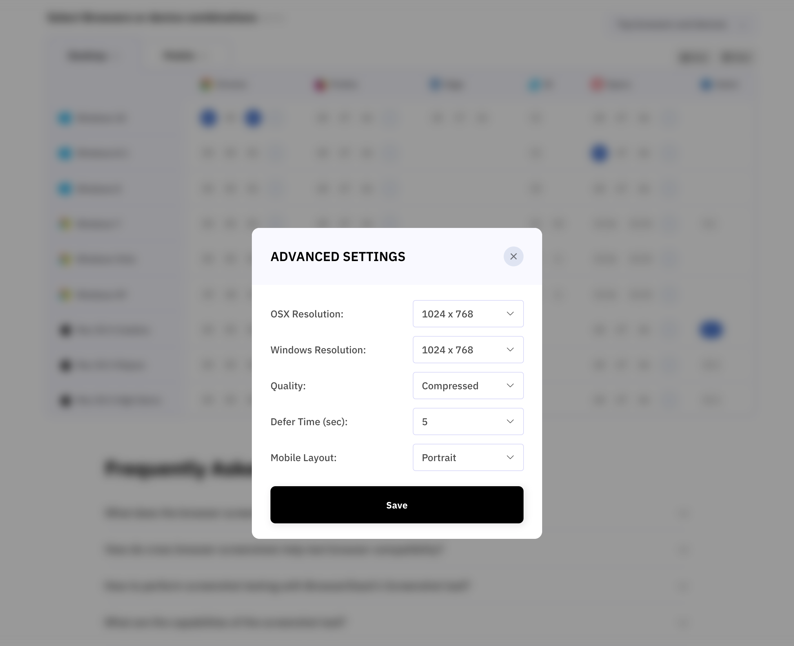
Modals can be locked by clicking on the close icon. Also the user need to click on save button in order to reflect the changes.
Browser/OS filters dropdownA collection of pre-made or custom filters section. These filters allows user to quickly find the relevent collection of browsers. Users can add more filters into dropdown by saving a collection/list of browsers.
The selected list will be represented with a tick icon.
Desktop - Scrolled view
Desktop - Multiple browser versions / OS combinations selected
A scenario where multiple browser versions are selected.
Create a custom list/combination
Users can create a custom filter list by saving a list/combination of browser versions
Saving a list: 1- Click on the save button. 2- Enter a list name in the modal window. Click on save.
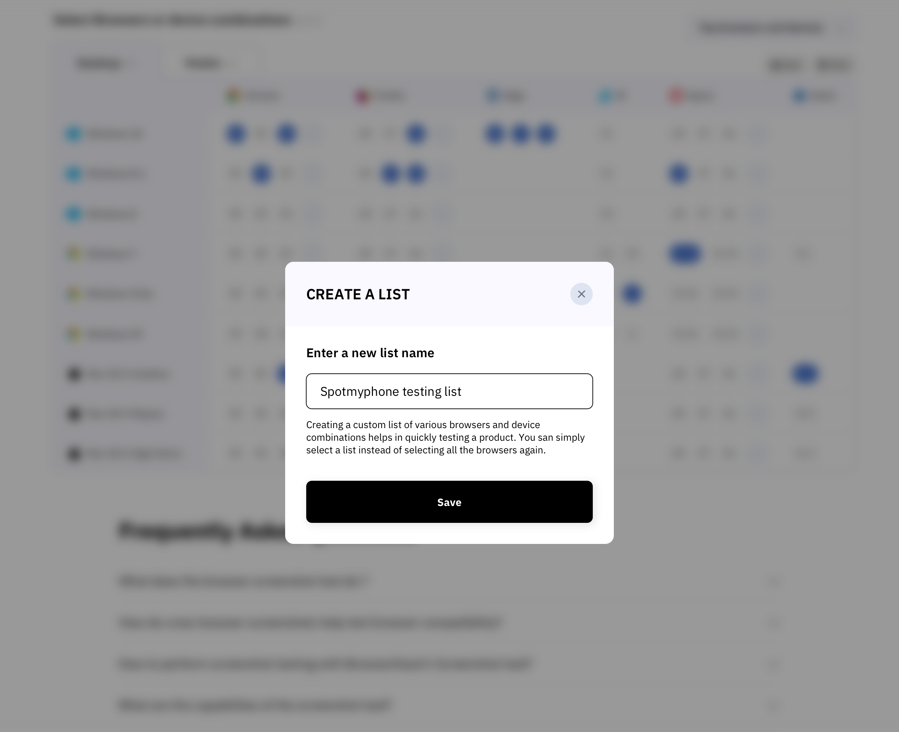
Clear list
Clear all browser and devices combinations to initial. A modal popover will appear to confirm this action.
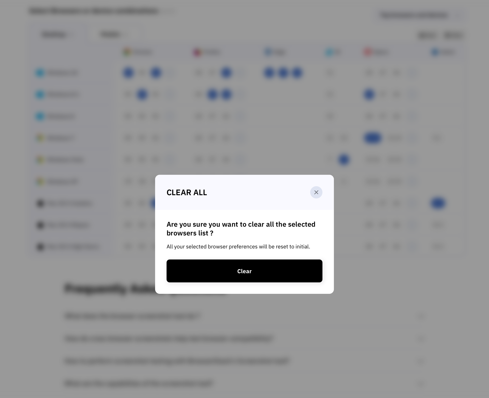
All versions for a specific browser and OS combination.
A tooltip view with a list of all older list of Browser versions along with the x64bit browsers. Users can easily switch between x32 and x64 versions with a help of a tab present in the tooltip. This helps to quicly and easily select a version.
List of versions selected from the tooltip will reflect in the main list by allocating a space in that particular list. By doing so the height of the entire row will reflect. (x32 bit scenario)
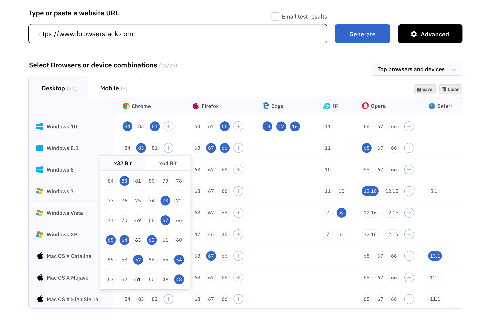
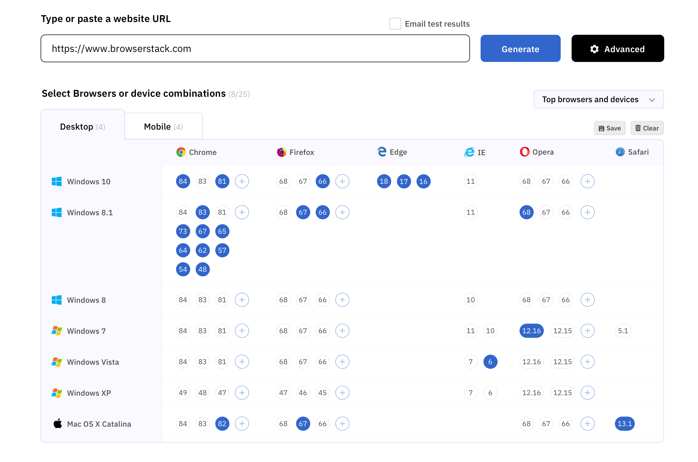
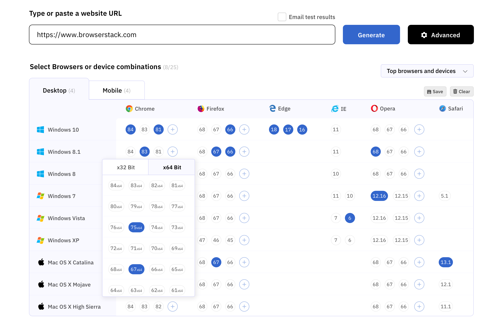
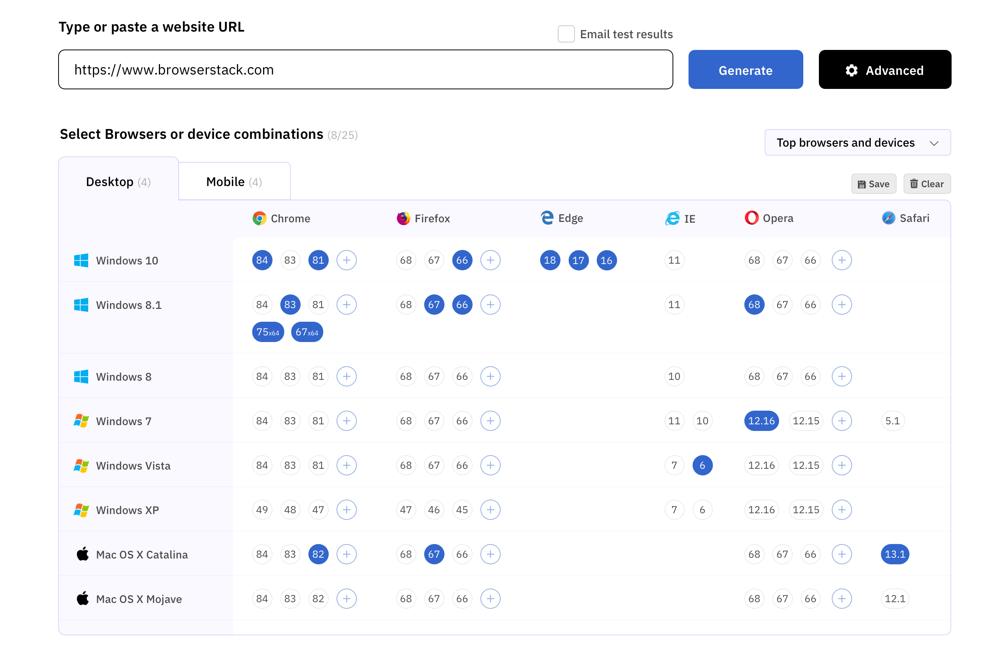
In the mobile scenario the sticky list of browsers will be removed. On mobile view the latest version of browser will be shown for the selected mobile device.
For mobile devices users can select the resolutions to portrait and landscape (according to device)
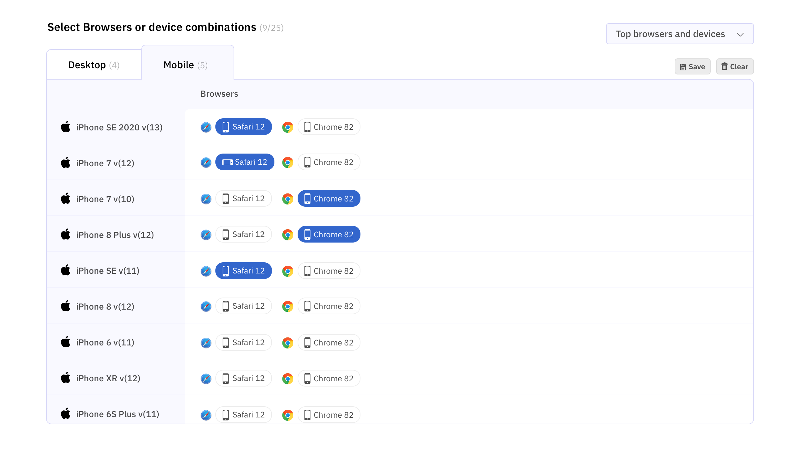
Real time changes will reflect in the list as we start to select entities/ versions/ resolutions list from the more options tooltip
This page shows the screenshots generated as per the OS and browser combinations. Users can share the test results(Via. Link, Slack, Asana, Email, Jira, trello and other team collaboration mediums), Download individial screen / ZIP of all screens, check the progress, cancel, run again and start a new test. The screenshot thumbnail shows the OS and Browser version for that screenshot along with live test and download file options. Also a skeleton view for the loading screenshots.
Invalid URL, No internet, Technical issue, etc.
All the error message blocks will be floating on a fixed bottom position.
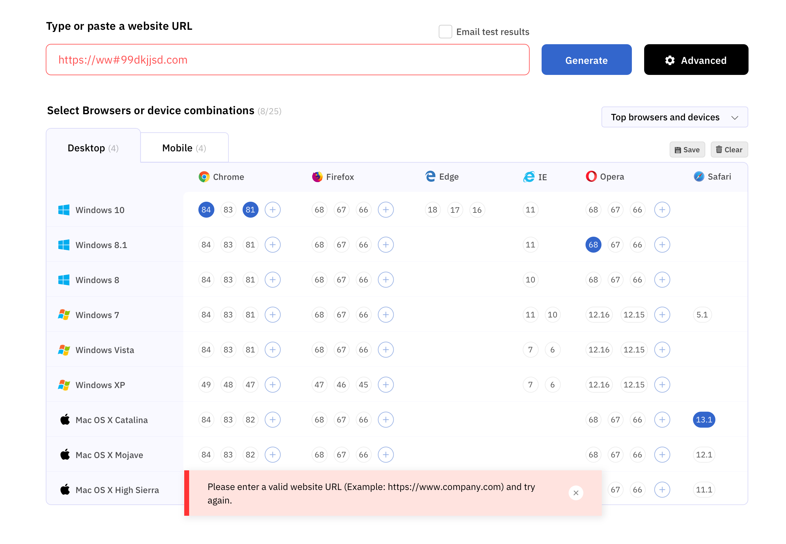
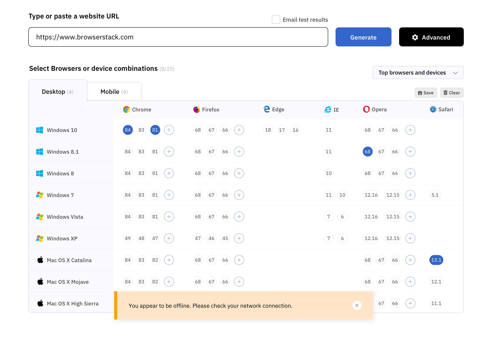
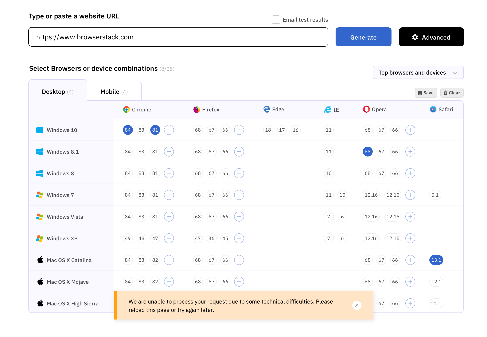